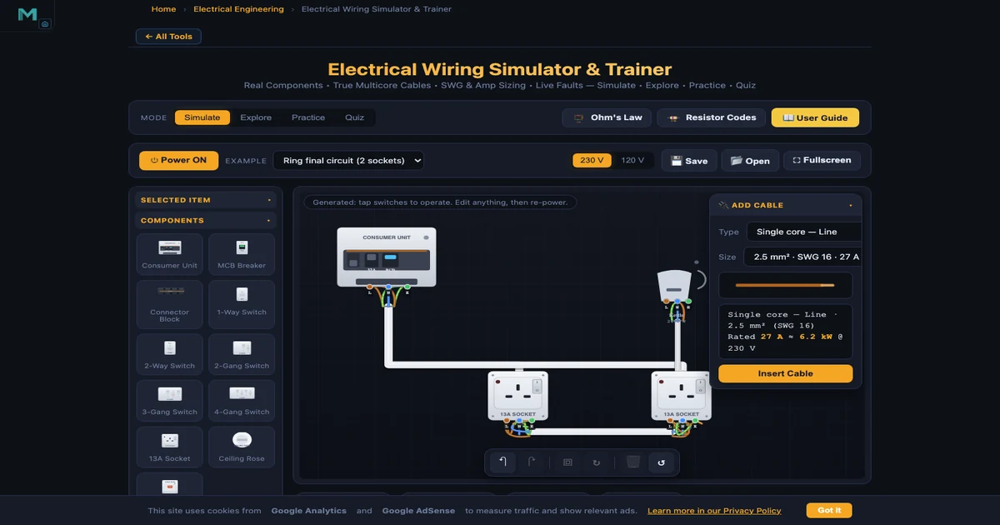
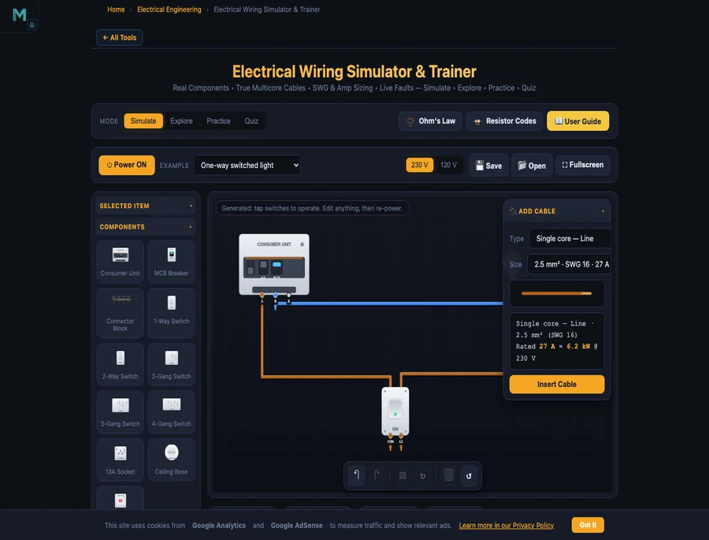

Why electrical wiring is hard to teach without a simulator
Teaching domestic electrical installation has always been equipment-heavy. A typical wiring bench needs a consumer unit, cables, sockets, switches, lamp holders, a multimeter and a proper earth path, all of which cost money, take time to set up, and can only model one configuration at a stretch. Faults have to be deliberately staged by the instructor. A simulator removes those constraints. Any student can build a ring final circuit, overload a cable, watch what happens, then switch to a two-way staircase circuit immediately, on their own, in seconds.
The tool works well alongside the Ohm's Law & DC Circuits guide and the Kirchhoff's Laws Solver. Understanding voltage, current and resistance at the component level is the right starting point for installation-level work, and this trainer is where those ideas get applied to real circuits.
What the electrical wiring simulator includes
The simulator opens in Simulate mode, the full wiring workbench. The left-hand palette has:
- Consumer unit: a main switch, busbar and individual MCBs from 6 to 40 A with 30 mA RCD protection.
- 1-way and 2-way wall switches: with COM, L1 and L2 terminals for staircase switching.
- 2, 3 and 4-gang 1-way switches: one common Line feeding independent outputs.
- 13, 16 and 32 A sockets: with a red neon indicator that glows when the socket is switched on and live.
- Ceiling rose: for loop-in wiring with switched-live and return conductors.
- MCB breaker: to protect individual sub-circuits in series.
- Fused connection unit (FCU / spur): fuse options up to 32 A for fixed appliances such as water heaters.
- Connector blocks: single-bar (1 to 5 or 1 to 10 common) or dual-bar with separate Line and Neutral rails for professional junction work.
- Household loads: lamp, fan, immersion heater, generic appliances, each with a configurable wattage.

The core formula and the golden rule
Every current in the simulator comes from a single formula. If a load draws power \(P\) watts at supply voltage \(V\) volts, the current it draws is:
$$I = \frac{P}{V}$$
A 2 kW electric heater on a 230 V supply draws \(I = 2000 / 230 \approx 8.7\text{ A}\). The same heater on a US 120 V supply draws \(I = 2000 / 120 \approx 16.7\text{ A}\), nearly double. That gap is why the simulator's 120 V toggle recomputes every current when you switch it.
Once you know the running current, cable and protective device selection follows one rule:
$$I_{\text{load}} \leq I_{\text{device}} \leq I_{\text{cable}}$$
The breaker rating must be bigger than the running current so it does not nuisance-trip, but smaller than the cable rating so it clears the fault before the cable overheats. Get the right-hand side wrong and the cable carries more than it is rated for. It heats up, and if the protection is too large to clear it, the simulator shows the cable catch fire.
Cable sizing reference
| Cable | SWG number | Amp rating (approx.) | Typical circuit |
|---|---|---|---|
| 1.0 mm² T&E | SWG 18 | ~16 A | Lighting (6–10 A MCB) |
| 1.5 mm² T&E | SWG 16 | ~20 A | Lighting / spur (10–16 A MCB) |
| 2.5 mm² T&E | SWG 13 | ~27 A | Socket ring (32 A) / radial (20 A) |
| 6 mm² T&E | SWG 10 | ~47 A | Cooker / shower (32–40 A MCB) |
| 0.75 mm² flex | — | ~6 A ≈ 1.4 kW | Table lamp, TV |
| 1.25 mm² flex | — | ~13 A ≈ 3 kW | Kettle, iron, microwave |
Step-by-step: build a one-way switched light
The one-way switched light is the right place to start. Load it from the Example dropdown and you have a fully wired circuit in front of you. Study it, then try modifying it:
- Load the example: click the Example dropdown and choose One-way switched light. The circuit is already wired so you can trace the conductors before touching anything.
- Find the consumer unit: the MCB at the top is set to 6 A, right for a lighting circuit. Brown (Line) and blue (Neutral) conductors run from it to the board.
- Trace the Line path: brown Line goes from the consumer unit to the switch's COM terminal; L1 carries the switched-live back to the lamp; Neutral runs direct from consumer unit to lamp.
- Check the cable size: 1.0 or 1.5 mm² twin-and-earth is correct here. Open the Cable Builder and confirm the amp rating exceeds the lamp's load current (\(P/V\)).
- Power on: press the Power ON button. The lamp holder glows. Tap the 1-way switch to toggle it off and on.
- Try a fault: use the Cable Builder to add a 0.75 mm² flex on a branch drawing 15 A. The fault strip reports an overloaded cable and the conductor turns red.

Two-way switch wiring: the staircase circuit
The two-way staircase switch trips up most students the first time. You need a 3-core strapper cable between the two switches, and getting COM, L1 and L2 to the right terminals without crossing the conductors is genuinely confusing on paper. Load the Two-way staircase light example and the wiring becomes clear:
- Supply Line feeds COM of switch 1.
- A 3-core + earth strapper runs between switch 1 and switch 2, using L1 ↔ L1 and L2 ↔ L2.
- The COM of switch 2 carries the switched-live to the lamp.
- Neutral goes direct from consumer unit to lamp.
Flip either switch and the lamp state changes, which is the whole point of a staircase installation. The engine tracks every node independently, so wiring a conductor into the Neutral path instead of the Line gets flagged as a switched-neutral fault immediately.
Ring final circuit: why the current splits
A ring final circuit is a staple of 18th Edition (BS 7671) study, and it surprises a lot of students that a 2.5 mm² cable rated around 27 A can safely serve a 32 A ring breaker. Load the Ring final circuit (2 sockets) example and power it on. Watch the readout badges: the total load current is shared between the two legs of the ring proportionally by length, with the shorter leg carrying more. Because neither leg has to carry the full load alone, the cable stays within its rating even though the breaker is set higher.
The equivalent radial with the same two sockets would push the full load through one cable, which is why a 2.5 mm² radial is normally limited to a 20 A MCB rather than 32 A.
The consumer unit: MCB, RCD and RCBO
The consumer unit in the simulator models the protection hierarchy you will see in every BS 7671 compliant installation:
- MCB (miniature circuit breaker): trips on overload (thermal, after a short delay) or short circuit (magnetic, nearly instant). Ratings from 6 to 40 A. The nearest MCB upstream of the fault clears it; a plug fuse blows before the spur MCB, which trips before the main. This is selectivity, or discrimination.
- RCD (residual current device): monitors the difference between Line and Neutral current. If more than 30 mA leaks to earth through a fault or a person, the RCD trips in milliseconds. Without an RCD, an earth fault triggers the breaker instead, which is much slower and far more dangerous to someone completing the fault path.
- RCBO (residual current breaker with overload): combines both protections in one device per circuit. The 18th Edition pushes for RCBOs so a fault on one circuit does not trip the whole-board RCD and black out the rest of the installation.
Set each MCB rating and you can see which breaker guards which circuit. Add an overloaded branch and the right MCB trips, not the main switch. That is discrimination working as intended.
UK electrical wiring colours and common faults
Modern UK and IEC fixed wiring uses three conductor colours that the simulator enforces on every cable:
- Brown: Line (live)
- Blue: Neutral
- Green-and-yellow: Earth (protective conductor)
Older UK installations used red for Line and black for Neutral. If you land a blue Neutral on a live terminal, the simulator raises a colour-mismatch warning, the same error an assessor would mark in a City & Guilds or 18th Edition practical.
The full list of faults the simulator detects:
- Overloaded cable: load current exceeds the cable rating; the conductor heats up and glows.
- Breaker trip: on overload (thermal delay) or short circuit (instant); the nearest protective device operates first.
- Earth fault: Line touching Earth triggers the 30 mA RCD; without an RCD, the breaker trips and the tool explains the danger.
- Neutral-Earth fault: Neutral shorted to Earth trips the RCD as soon as a load draws current; invisible and dangerous without an RCD.
- Reversed polarity: Line and Neutral swapped at a load; the appliance runs but the switch and fuse are in the wrong conductor.
- Missing earth on Class I: a metal-bodied appliance with no protective earth is a shock hazard.
- Switched neutral: switch breaks Neutral instead of Line; the fitting stays live when it appears off.
- Wrong or blown plug fuse: each power cord carries a BS 1363 plug fuse (3, 5 or 13 A); an oversize fuse is flagged; sustained overload blows it and you replace it from the inspector panel.
- Socket overloaded: current exceeds the socket's rated capacity (13, 16 or 32 A); the contacts overheat.
Explore mode: 16 concepts in 4 categories
Switch to Explore for structured theory. Four category pills organise the content:
- Wire & Cable: SWG numbers, mm² cross-sections, current ratings, T&E vs flex vs single-core, conductor colour codes.
- Components: how each component works, covering the consumer unit, 1-way and 2-way switches, sockets, ceiling rose and FCU.
- Protection & Safety: MCB, RCD, RCBO, earthing, fuses, discrimination and the BS 1363 plug fuse.
- Circuits: one-way, two-way, ring vs radial, loop-in ceiling rose, spur from a ring.
Each concept card has a short explanation and a worked example. Explore is the right starting point if the Simulate workbench feels like too much at first.
Practice and Quiz mode
Practice mode mixes numerical problems (calculate load current, pick a cable size, select the right fuse rating) with wiring-choice questions. Type or pick your answer, press Check, and read the full worked solution. Your score is tracked at the top.
Quiz mode gives you 5 questions covering cable colours, sizing rules, switching and protection. It returns a score with a star rating and a per-question breakdown so you know which topics need more work. Useful for City & Guilds 2391, 2382 (18th Edition) revision and equivalent TVET assessments.
7 ready-made circuits to study
The Example dropdown loads any of these fully-wired circuits. Open one, power it on, then modify or break it to see how the protection responds:
- One-way switch control: consumer unit to switch to lamp, the absolute minimum.
- One-way switched light: proper twin-and-earth with ceiling rose and lamp holder.
- Two-way staircase light: 3-core strapper and COM/L1/L2 wiring at each switch.
- Heavy duty wiring: high-current circuits with larger cable sizes and appropriately rated MCBs.
- Ring final circuit (2 sockets): ring back to the same 32 A MCB; watch the current split between legs.
- Loop-in ceiling rose: multi-lamp loop wiring from one ceiling point to the next.
- Water heater on own MCB: a dedicated radial with an FCU and a higher-rated cable.
Who this wiring trainer is for
It works for several different groups:
- Electrical and TVET students studying domestic installation for the first time. The visual, hands-on format builds a working mental model faster than a textbook diagram does.
- City & Guilds / 18th Edition (BS 7671) candidates revising cable selection, protection and switching circuits before assessments.
- Electrical and electronic engineering undergraduates connecting theory, Ohm's Law, KVL, current division, to real installation practice.
- Instructors who use it to show live faults to a whole class with no risk. The logic gates simulator guide describes a similar classroom approach.
- DIY homeowners who want to understand how a plug, socket or light switch is wired before opening a fitting, and confirm that the colours they see match what is expected.
The default supply is 230 V (UK and much of the world, including UAE), with a 120 V comparison for North American curricula.
Frequently asked questions
How do you wire a 3-pin plug?
In a UK (BS 1363) plug: brown Line to the fused right terminal, blue Neutral to the left terminal, and green-and-yellow Earth to the longer top pin. Fit a 3 A fuse for appliances under 700 W (lamps, radios) and a 13 A fuse for high-power loads (kettles, irons, heaters). In the simulator, add a Power cord cable, wire the three cores to the appliance terminals, then drag the moulded plug onto a switched socket. It snaps in and connects all three pins automatically.
What cable size do I need for a lighting or socket circuit?
Lighting circuits typically use 1.0–1.5 mm² twin-and-earth protected by a 6–10 A MCB. Socket circuits use 2.5 mm² on a 20 A radial or a 32 A ring final circuit. Calculate running current first with \(I = P / V\), then confirm \(I_{\text{load}} \leq I_{\text{device}} \leq I_{\text{cable}}\). The Cable Builder shows both the mm² size and the SWG number with its amp rating.
What is the difference between a ring and a radial socket circuit?
A radial circuit runs one cable from the consumer unit to each socket and stops at the last outlet. A ring final circuit loops back to the same breaker, so load current is shared between both cable legs, which lets a lighter 2.5 mm² cable serve a 32 A circuit. The simulator shows the actual current in each leg so you can see the ring dividing the load.
What is the difference between an MCB, an RCD and an RCBO?
An MCB trips on overload or short circuit to protect the cable. An RCD trips on 30 mA of earth leakage to protect people from electric shock. An RCBO combines both in one device per circuit, so a fault on one circuit does not black out the whole board. The consumer unit here models MCBs from 6–40 A and 30 mA RCD protection.
What are the modern UK electrical wiring colours?
Modern UK and IEC fixed wiring: brown = Line, blue = Neutral, green-and-yellow = Earth. Older UK wiring used red for Line and black for Neutral. Flexible cords have used brown/blue/green-yellow for many years. Every conductor in the simulator is colour-coded, and landing a wrong colour on a terminal raises a colour-mismatch warning instantly.
Should a switch always break the Line conductor?
Yes, always. A switch wired into the Neutral leaves the fitting connected to Line even when it appears off, a serious shock hazard. The simulator detects a switched-neutral fault the moment you complete that wiring and flags it in the fault strip.
Explore related simulators
These tools and articles cover related ground:
- Ohm's Law Simulator: V = IR, series and parallel circuits, voltage divider, Wheatstone bridge.
- Kirchhoff's Laws Solver: KVL and KCL for multi-loop networks with live current arrows.
- Transformer Simulator: step-up / step-down, turns ratio, primary and secondary currents.
- Logic Gates Simulator: combinational and sequential logic for electrical and electronics students.
- PLC Ladder Logic Simulator: industrial control, coils and contacts, timer and counter rungs.
- Ohm's Law DC Circuits guide: 12 preset circuits explained with worked examples.
- Transformer Simulator guide: turns ratio, regulation and efficiency calculations.
- DC Motor guide: back-EMF, speed-torque curves, field-weakening explored.